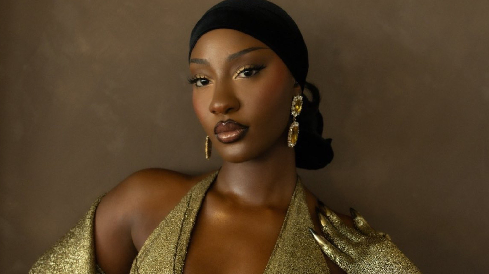

Tems
Born: 11 June 1995
Age:
Years Active: 2018–present
Genre/s: Afrobeats, R&B, Alté
Label/s: Since '93, RCA, Leading Vibes
Temilade Openiyi (born 11 June 1995), known professionally as Tems, is a Nigerian singer, songwriter, and record producer. She rose to prominence after being featured on Wizkid's 2020 single "Essence", which peaked at number 9 on the Billboard Hot 100 chart following the release of the remix version with Justin Bieber. The song earned her a Grammy Award nomination. That same year, she was featured on the song "Fountains" by Canadian rapper Drake.
In 2020, Tems released her debut extended play (EP), For Broken Ears. She signed with RCA Records to release her second EP, If Orange Was a Place (2021). In 2022, Tems' vocals from her song "Higher" were sampled by Future on his single "Wait for U", which led to her being credited as a guest artist alongside Drake. The song debuted atop the Billboard Hot 100, making her the first African artist and second Nigerian artist to have a song do so on the chart. The song earned her the Grammy Award for Best Melodic Rap Performance. Tems covered Bob Marley's "No Woman, No Cry" for the Black Panther: Wakanda Forever soundtrack in July 2022 and in the same month, her song "Free Mind" (from her debut EP) debuted on the Billboard Hot 100, peaking at number 46 and breaking the female record for longest charting number one song on R&B/Hip-Hop Airplay chart. She also co-wrote and rendered background vocals on the song "Lift Me Up" by Rihanna, which earned her nominations for the Academy Award for Best Original Song, the Golden Globe Award for Best Original Song and the Grammy Award for Best Song Written for Visual Media.
In 2024, Tems released her debut studio album Born in the Wild to critical acclaim. The album reached the top 30 in the Netherlands, Switzerland and in the United Kingdom, where it peaked at number 24. She embarked on her ongoing Born in the Wild Tour, a supporting world tour. Tems won a Grammy Award from three nominations at the 67th Annual Grammy Awards: her song "Love Me JeJe" won Best African Music Performance, while Born in the Wild was nominated for Best Global Music Album and its third single "Burning" was nominated for Best R&B Song. Tems became the first Nigerian artist with multiple Grammy Awards. In 2026, Tems earned her first number-one single of the UK Singles Chart with "Raindance" along side Dave. The song subsequently earned her six Billboard Hot 100 entry.
Throughout her career, Tems has received several accolades, including two Grammy Awards, a Billboard Women in Music Award, four NAACP Image Awards, four BET Awards and three Soul Train Music Awards. As of 2025, Tems has sold over 25 million certified units worldwide, including 12 million RIAA certified units.